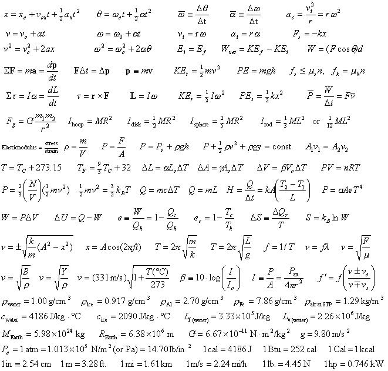
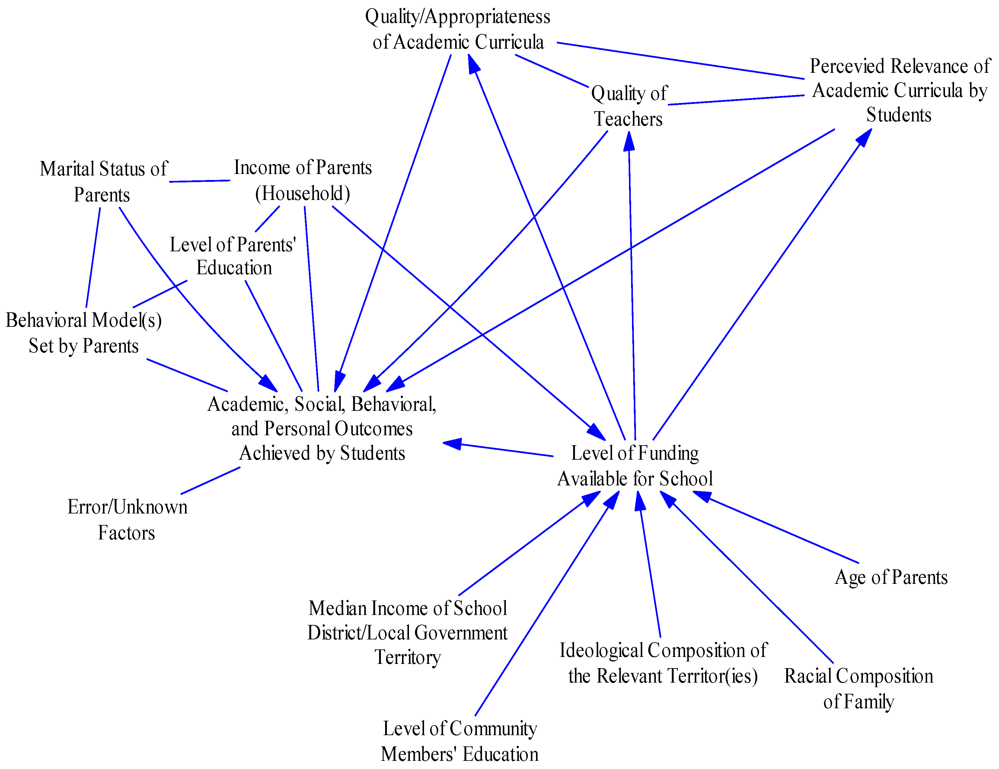

I'm an MS CS student at Georgia Tech working with Dr. Christopher MacLellan in the Teachable AI Lab, where I study human-like concept formation and build vision models that support continual learning. I also work with Dr. Tong Zhang (UIUC) on inference methods for guided diffusion, and with Dr. Rodrigo Valente in Georgia Tech's Vertically Integrated Projects on modeling student knowledge to recommend programming problems.
A. Roy, Z. Wang, C. J. MacLellan
Findings of the Association for Computational Linguistics: ACL 2026 arXivJ. Zhou, A. Roy, S. Gupta, D. Weitekamp, C. J. MacLellan
Proceedings of the ACM CHI Conference on Human Factors in Computing Systems, 2026 arXivA. Roy, J. Pivarski
Journal of Physics: Conference Series, 3206(1), 2026 arXivA. Roy, J. Pivarski, C. W. Freer
Journal of Physics: Conference Series, 2438(1), 2023 arXivA Lark-based transpiler that translates between three standard scientific expression formats used in high-energy physics.
Code
Causal graph library extending networkx to mixed-edge graphs. I implemented core algorithms for graph identification and structural equation models with Dr. Adam Li.
Code